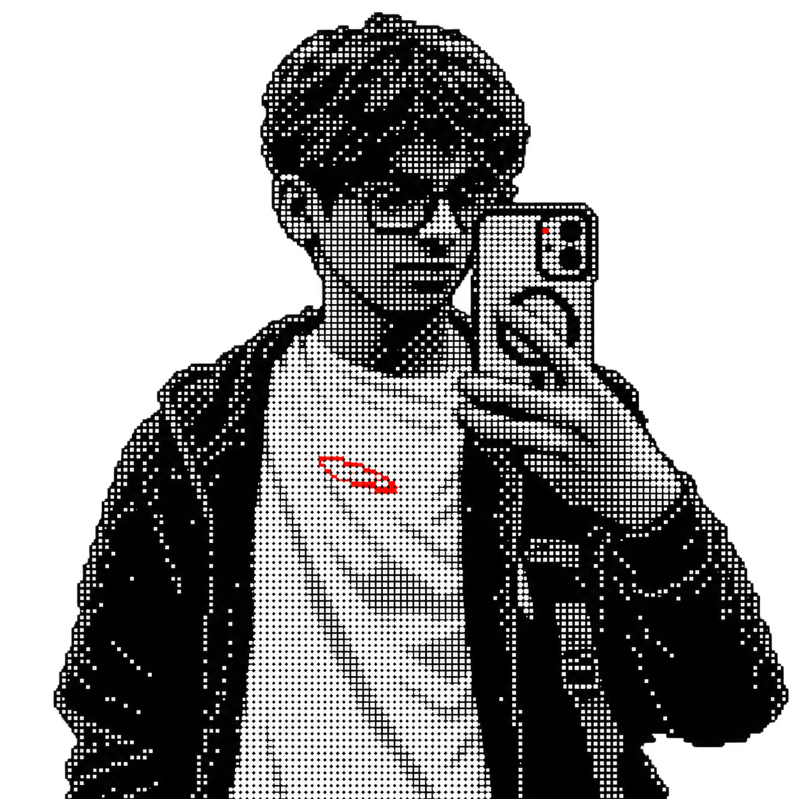

Open to work and collaborations
Anshul Gawai
Backend and systems engineer Pune, India
Hi, I'm Anshul (known as Ashking on the internet) currently a Computer Science undergraduate. I started programming 2024 and have been coding ever since.
I mainly work with Python, JavaScript/TypeScript and Go.
My interests include MLOps, Systems-programming, Low-level dev.
I love simplicity and minimalism and Open Source.
I learn by building. Most of what is here comes from my second year of college — I pick one idea and go deep until it works, or until it teaches me something.
Third-year student, Artificial Intelligence and Data Science
Class of 2028
Currently building neural networks and learning PyTorch and deep learning

01
Stack
The tools I reach for every day.
- 01Languages
-
- Go
- C
- C++
- JavaScript
- Python
- Shell
- 02Backend and realtime
-
- Node.js
- Express
- REST APIs
- WebSockets
- Socket.io
- WebRTC
- MongoDB
- Supabase
- 03ML and data
-
- NumPy
- Pandas
- PyTorch
- 04Tools and platforms
-
- Docker
- Git
- GitHub
- Linux
- npm
- Neovim
- Zed
- Vercel
02
Work
Things I built to understand how they work.
-
Audio fingerprinting
A music recognition engine in the spirit of Shazam. It decodes WAV files from scratch, extracts PCM audio, mixes stereo down to mono, builds FFT spectrograms with Gonum, and matches hashes against a reference database.
Go
Docker
-
BitTorrent client
The BitTorrent wire protocol, written from scratch. It handles UDP tracker negotiation, peer handshakes, choke and unchoke state machines, concurrent piece scheduling, and block-level file reassembly — verified against live public swarms.
Node.js
JavaScript
-
SSH honeypot
A decoy server that impersonates an Ubuntu 22.04 machine. It runs a low-level SSH server on crypto/ssh with ED25519 host keys, a believable 20-command interactive shell, geo-tagged attack telemetry, and a Docker-based monitoring dashboard.
-
Git Visualise
A terminal tool that walks your local repositories and draws a GitHub-style contribution heatmap — commit intensity over a rolling six-month window, color-coded for the shell.
Shell
03
Open Source
Merged work in other people's repositories.
Connecting…
04 · Contact
Let’s build
something.
My inbox is open — questions, ideas, and roles are all welcome.